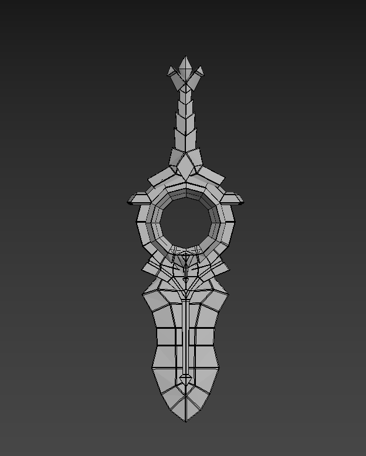
01 / 06
镂空环柄武器
风格化武器 · 素模 ｜ 3ds Max ｜ 正交前视图
左右对称的单件武器，中段为镂空圆环握柄，剑身以分段弧面与块面切割建立体积；正视图下对称与厚度关系清楚。
制作说明：待补充（面数 / UV / 耗时 / 卡点）
作品按类别归档：3D 建模为主，平面与图像、动效、界面设计为辅。每一类都可以继续追加，新的作品会按顺序排在所属类别里。（共 24 件）
建模阶段的素模作品：武器、硬表面道具、场景与产品包装。现阶段完成形体与比例搭建，UV 拆分、贴图与渲染是下一步计划。

左右对称的单件武器，中段为镂空圆环握柄，剑身以分段弧面与块面切割建立体积；正视图下对称与厚度关系清楚。
制作说明：待补充（面数 / UV / 耗时 / 卡点）
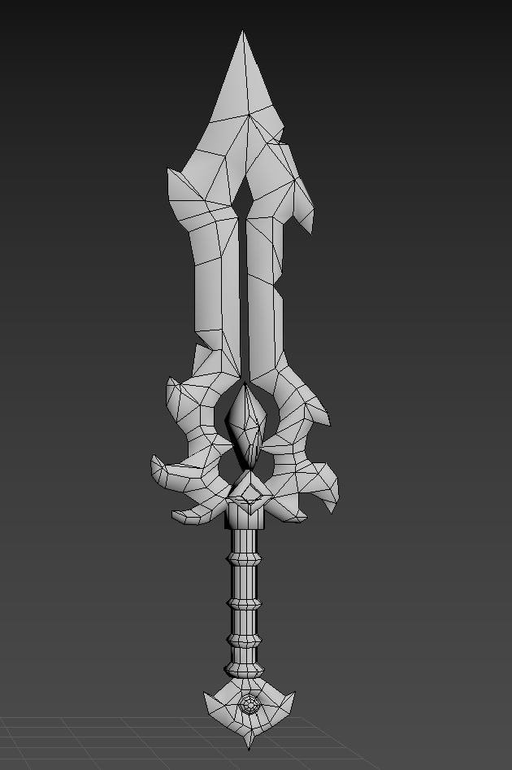
剑身、卷曲护手、剑柄与尾部球饰四段组合，护手用曲面块面叠出造型；透视视图可见三角面布线，便于检查转折密度。
制作说明：待补充（面数 / UV / 耗时 / 卡点）
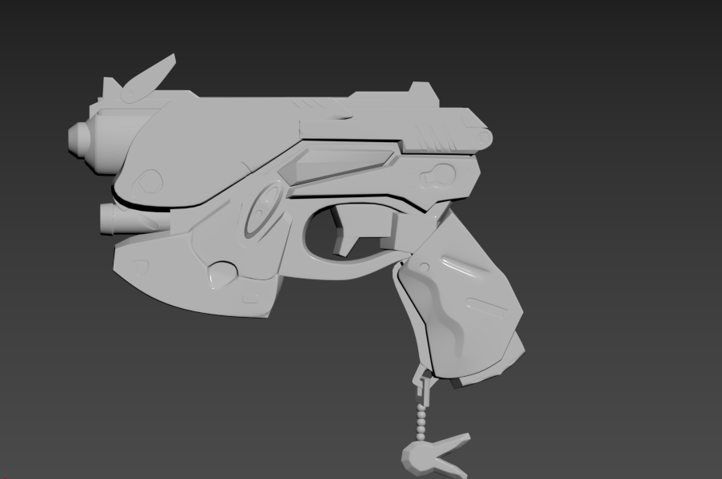
枪身、枪管、握把与尾部挂链分件建模，侧视图检查整体比例与部件穿插关系，接缝按实际结构分块。
制作说明：待补充（面数 / UV / 耗时 / 卡点）
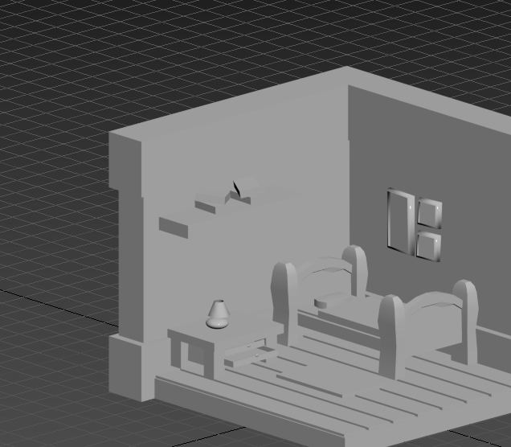
床架、床垫、床头柜、台灯、墙面置物与窗户组成完整一间，以基本几何体起形后转多边形细化，床垫与床板用条纹结构表现层次。
制作说明：待补充（面数 / UV / 耗时 / 卡点）
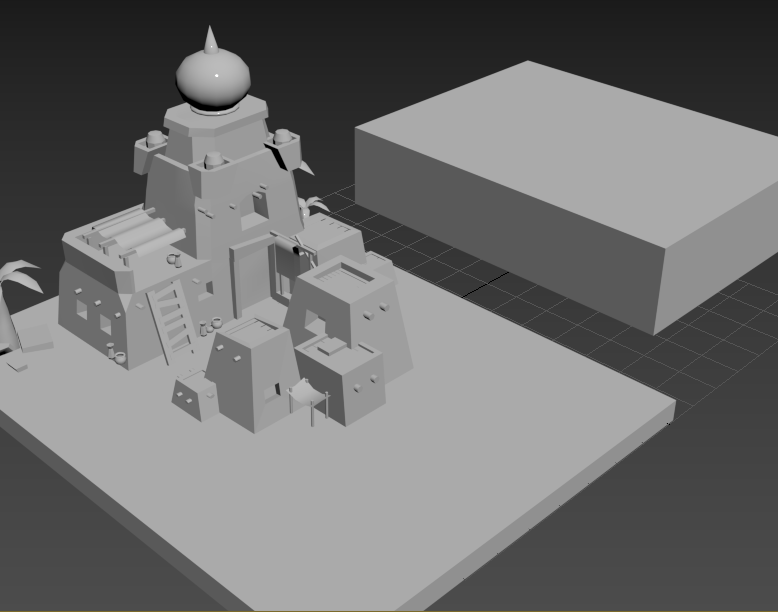
沙地地台、多层建筑群、楼梯与门洞细节、棕榈植物，以及右侧一处大体块建筑；按地台—建筑—配景的顺序逐层搭建。
制作说明：待补充（面数 / UV / 耗时 / 卡点）
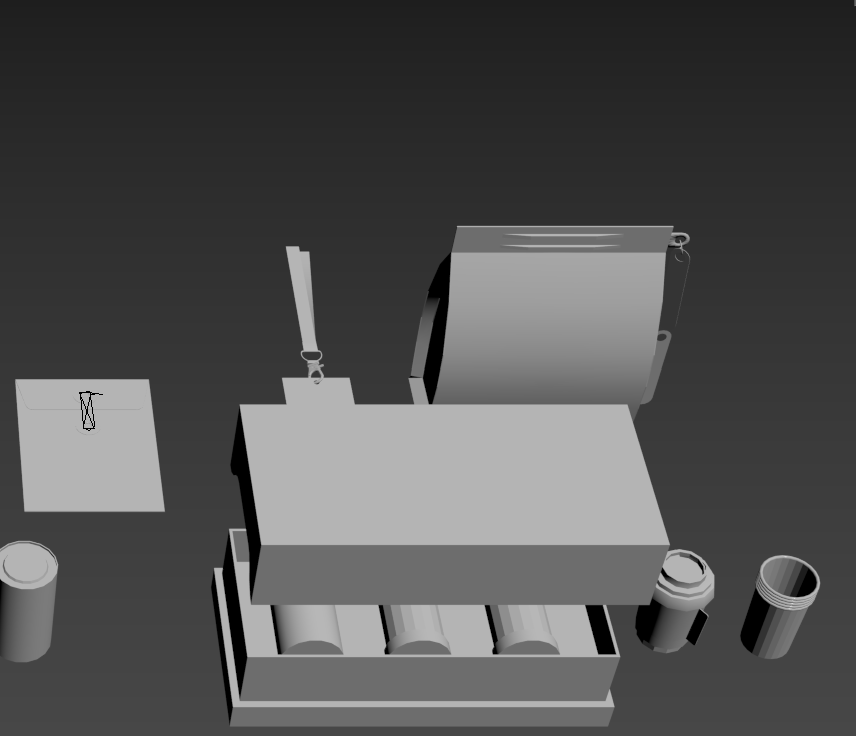
纸盒、卷轴盒、盒盖与两只罐体组合，箱体以平面切割加圆角过渡，罐体用圆柱起形，统一摆在一次排布中检查尺寸关系。
制作说明：待补充（面数 / UV / 耗时 / 卡点）
竹语轩 VIS 手册节选：标志由「竹 / 窗格 / 文字」三元素推导，配套标准网格制图、标准色与应用辅助图形。
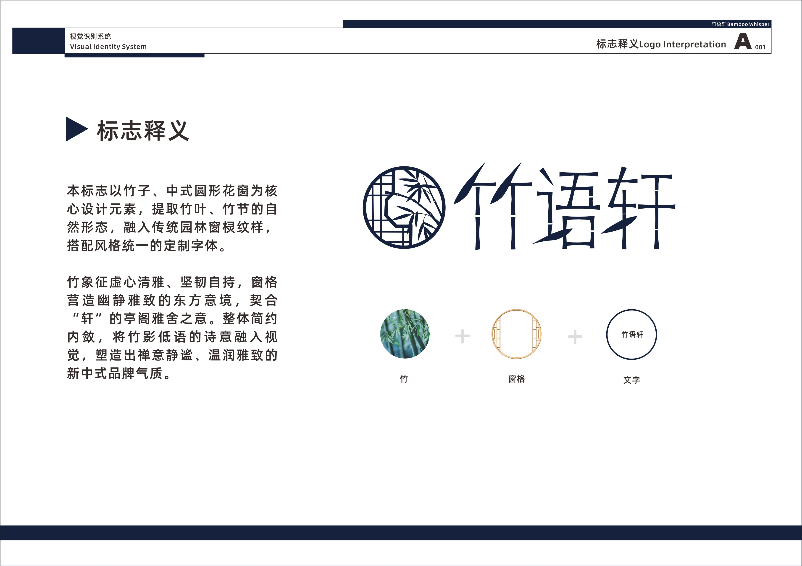
竹叶与竹节取自然形态，叠入中式圆形花窗窗棂，再配定制字体，合成一个竹影窗格的圆形标志。
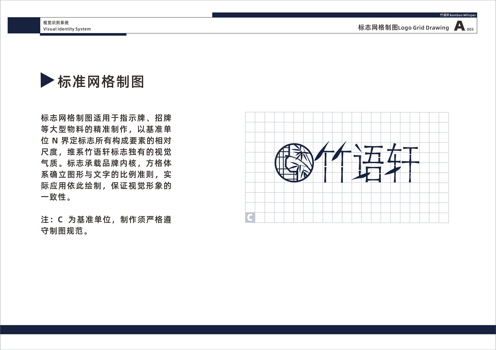
以基准单位 C 界定标志各构成要素的相对尺度，用于指示牌、招牌等大型物料的精准复现。
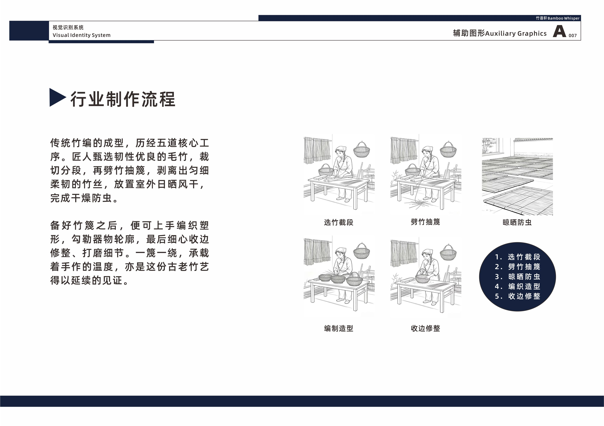
把竹编五道工序（选竹截段、劈竹抽蔑、晾晒防虫、编制造型、收边修整）画成统一笔触的线稿插画。
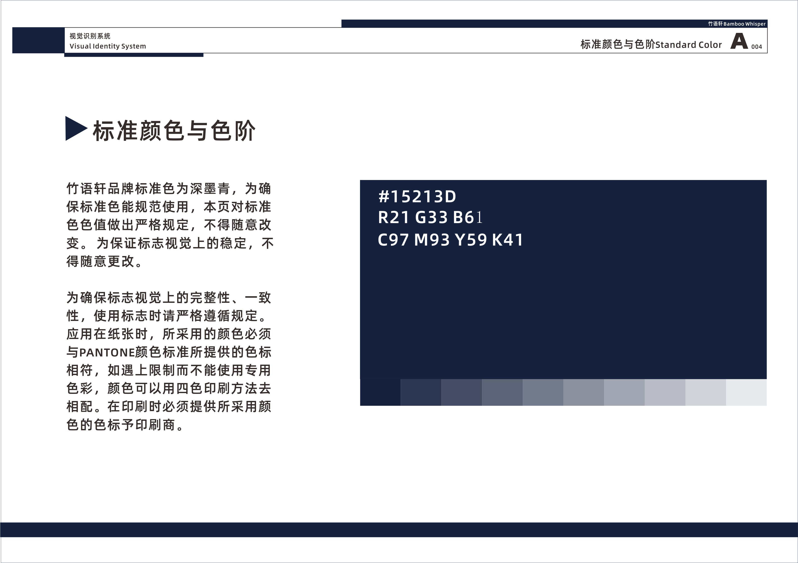
品牌标准色定深墨青 #15213D（C97 M93 Y59 K41），并规定色阶与印刷、PANTONE 对照的使用方式。
Photoshop 的合成与版式练习：节气海报、品牌官网长页、电商 banner 与主图。
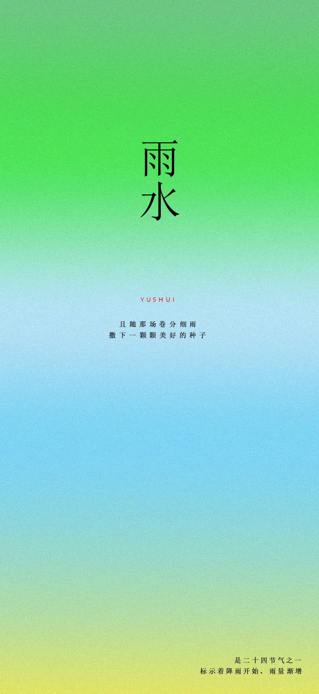
二十四节气「雨水」海报，整幅用绿→青蓝→暖黄的弥散渐变铺底，居中竖排“雨水”二字与拼音，配两句节气文案，右下角标注节气含义。
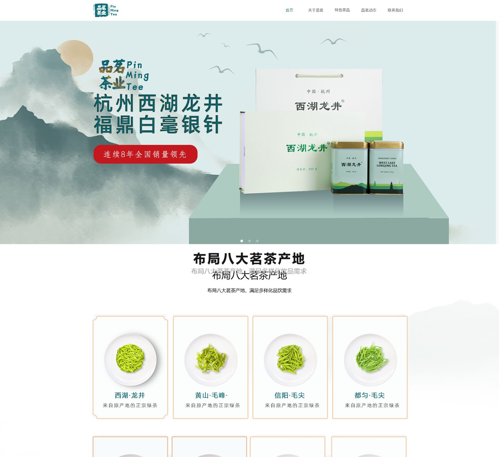
「品茗茶业」官网首页长页，首屏云山背景与西湖龙井礼盒、红色促销标签，中段是八大茶产地的圆形图卡，下接茶园视频区与页脚导航。
自然堂美妆 banner（第三版修改稿），紫调渐变与同心圆波纹做底，右侧四支产品竖向排布，左侧主副标题加「立即购买」按钮。
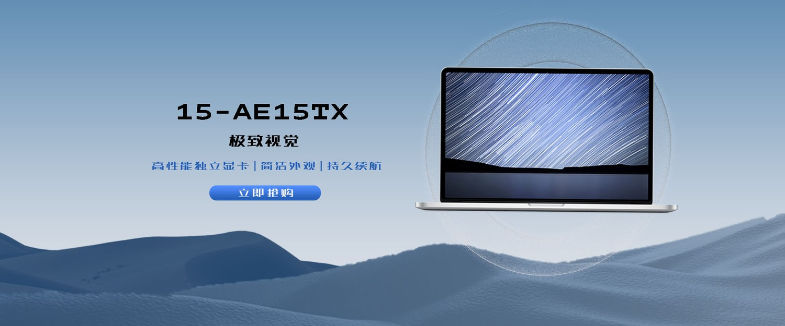
笔记本产品 banner，蓝调雪山背景与圆形光晕托住机身，左侧型号「15-AE15TX」、三条卖点与「立即抢购」按钮。
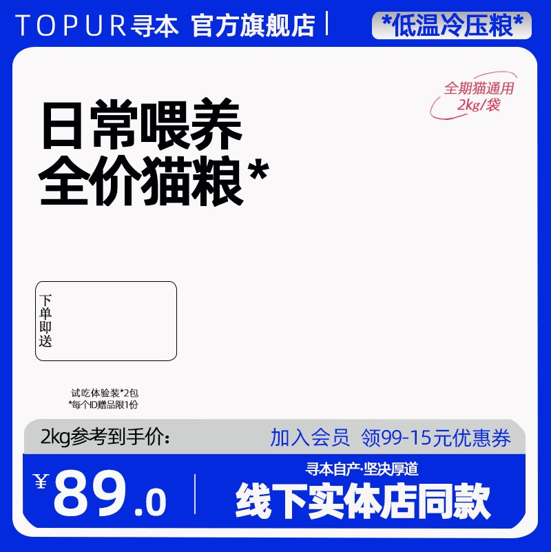
电商主图临摹练习，蓝白撞色版式，超大标题「日常喂养 全价猫粮」、优惠信息条、「¥89.0」到手价与促销角标，按平台主图规范排版。
After Effects 的动态图形与短片练习，网页版可直接播放；PDF 版取关键帧并标注时长。
城市地标剪影排成远景，小车沿地面横移并做轻微起伏，多国建筑与云朵分层错速移动，形成视差感。
橙色挖掘机的机械臂与铲斗做挖掘动作，履带、液压杆与驾驶室分层绘制，背景为城市建筑与树丛。
视频播放器、天气卡片与投票卡片三段界面元素叠放，做入场、位移与切换动效，卡片按层级分组位移动画。
白色手机立在木地板上、红色墙面为背景，投影与高光随镜头动画变化，突出机身轮廓与品牌字样。
复古纸面上黑桃牌依次散开、翻面与旋转，边缘带手绘抖动质感，背景压一层航海罗盘纹样。
竹语轩 App 的界面与图标练习：启动页、登录页，以及线性与面型两套图标体系。
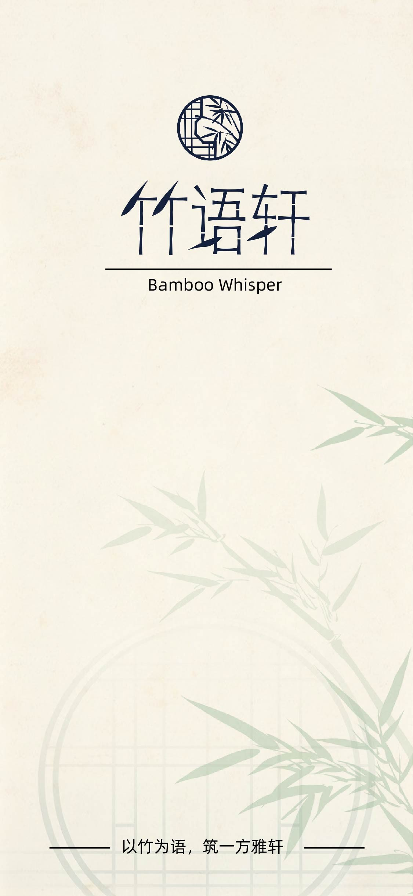
米色纸纹背景叠竹叶暗纹与窗格细线，中心放圆形竹编标志、定制字标「竹语轩」与英文 Bamboo Whisper，底部一句 slogan。
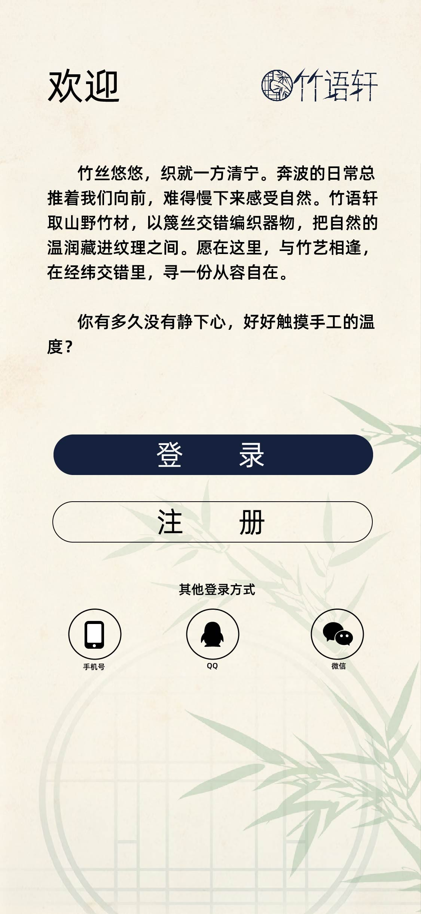
欢迎页文案介绍品牌，主次两个按钮（深墨青实心「登录」、描边「注册」），底部三种第三方登录方式图标。
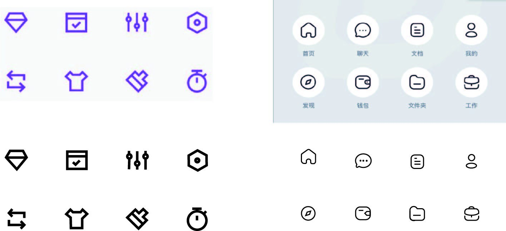
两组 8 个功能图标，上方为紫色线条版与 App 底部导航图标（首页/聊天/文档/我的/发现/钱包/文件夹/工作），下方为同款黑色线稿，展示线宽与圆角统一。
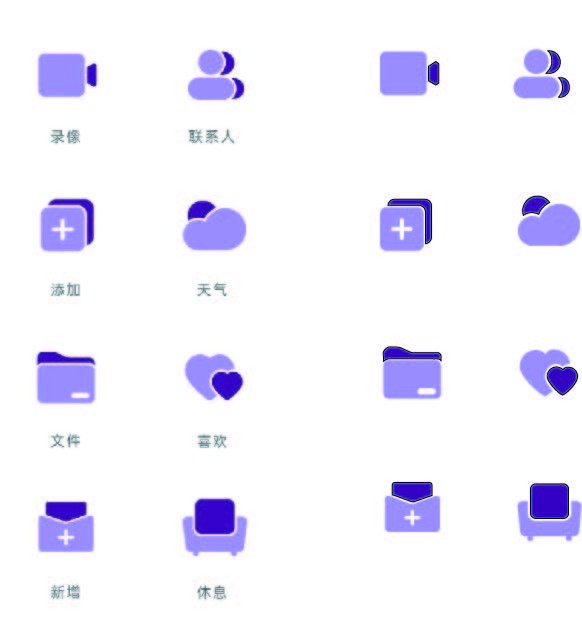
8组面型图标（录像/联系人/添加/天气/文件/喜欢/新增/休息），浅紫与深紫两种配色并置，验证小尺寸下的识别度。